黄叔社群里面有超过上千人都是使用 Minimax 的 Coding Plan，所以黄叔对于最新的 M2.7 模型是非常的关注。
多 Agent 协作：50+ Skills 的复杂协作，它真的扛住了
首先，黄叔最近玩 Skills 玩的非常的多。那过去一个月消耗的 token 已经超过了 3000 美金。如果没有 Max 套餐计划早就死翘翘了。所以在有了 M2.7 支持多 Agent 之后，我是非常的感兴趣，特别关注到了它支持 Agent Team 能力，我赶紧打开我最常用的 复杂的 Agent 逻辑，有带有复杂的 Agent Team 的 skill 来让他测一测。
详细帮我读一下整个项目文件夹，然后说一说这个 Skills 它是如何运作的。渲染出一个Html，用2026年最新的前沿样式规范,详细的描述它的运行逻辑，特别是 Agent Team 的部分，多 Agent协作部分要 有一个详细的流转描述。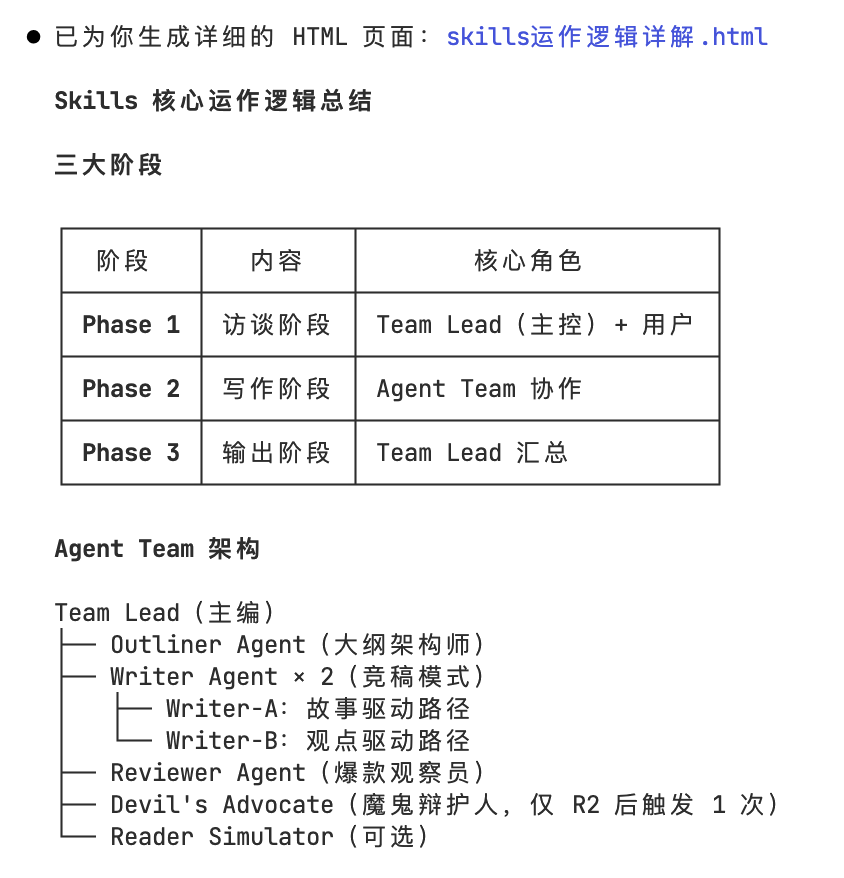
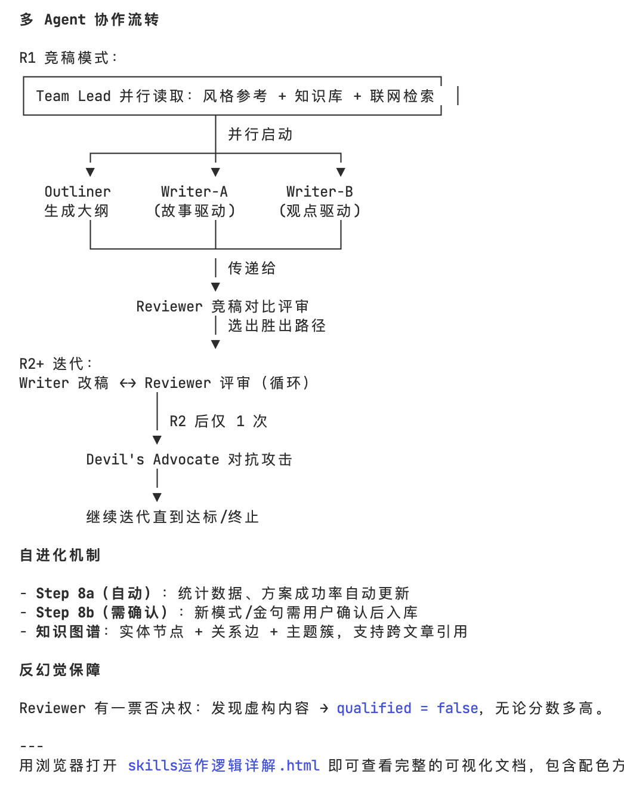
速度非常的快然后很快他就给出了一个简要的报告，做了一个核心总结。可以看到这个 agent team 它其实是有点复杂的。
然后 Minimax M2.7 生成的网页质量也非常高，做了非常详细的图形化的呈现。
我咋觉得它比 Opus 呈现的网页呈现的效果更好？
详细介绍了每个 Agent 的工作机制：
包括具体的多 Agent 协作流程：
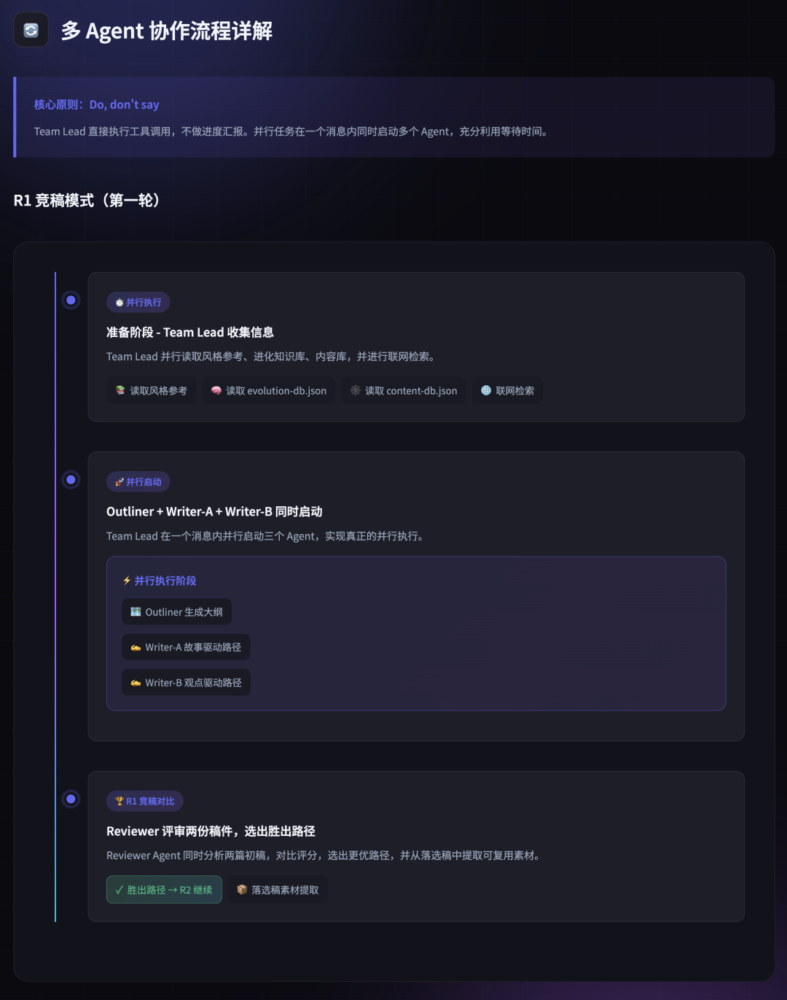
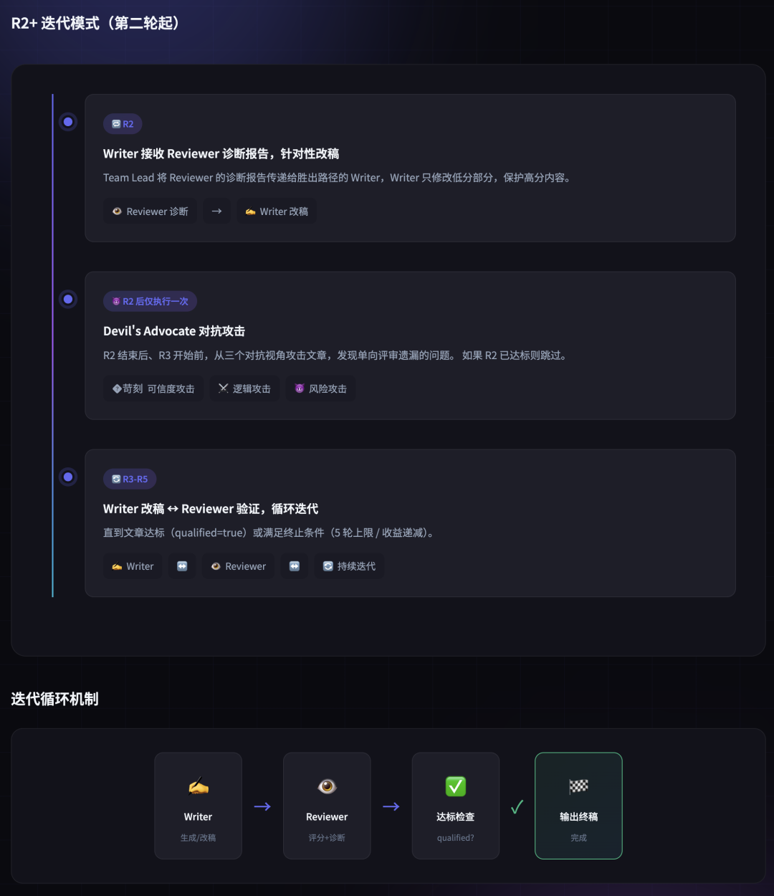
我去，真的有点惊艳，我们实际跑一下 case 测一测。
第一反应是，响应的速度真的快！过去我需要等 Claude 模型输出，都要切换到其他的网页去看看别的。现在完全没有那个时间了，它给到我的是即时满足。
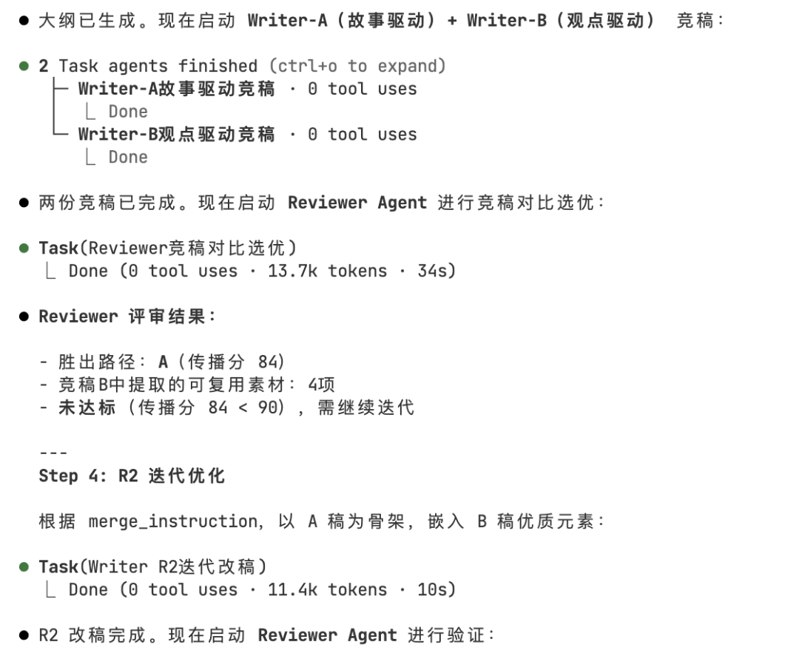
还真的不错，可以连续多轮调用 Agent 来改写：
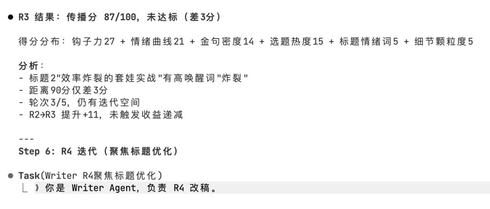
并且确实会读取进化知识库里的要点，来生成内容。
写作质量也相当不错了~非常接近我心目中好的水准了。
有点超出我的预期，这么复杂的 Agent Team 都能够很好的调用，确实又有了更大的进化。
大家可以看看 M2.7 写出的内容质量，打个分吧：
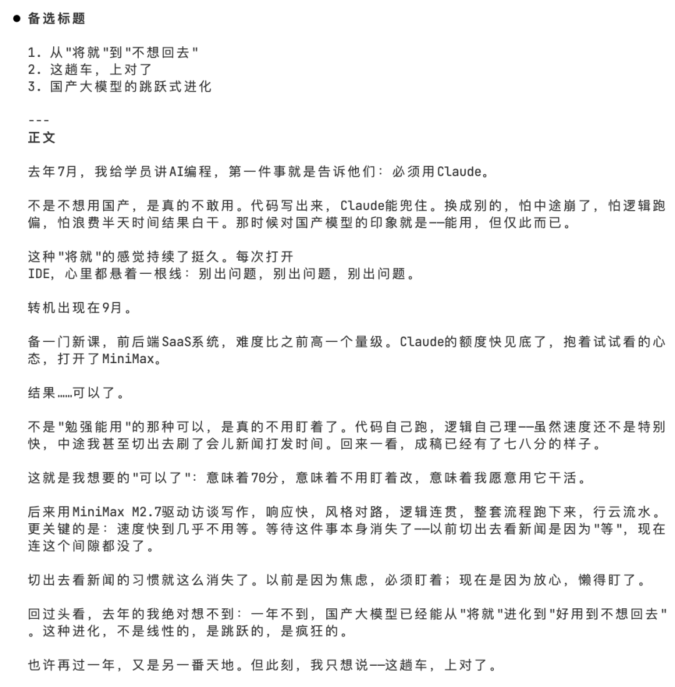
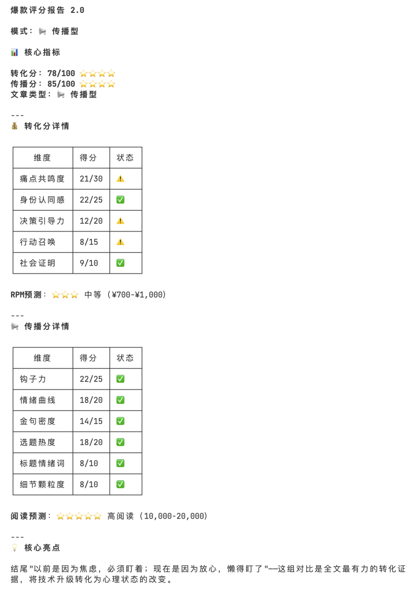
Coding 能力：一句话口喷，3D 主题乐园直接跑起来
接下来再来一个是我这里有一个课程的官网，但它是一个普通的网页。然后我希望把它加一个 3D 版本的，很快，效果就出来了，大家看视频：
非常丝滑，它的实现核心就一句话：
当前项目我希望用一个3D 主题乐园的方式来呈现，你帮我做方案。然后就给我出了一个还挺具体的方案：
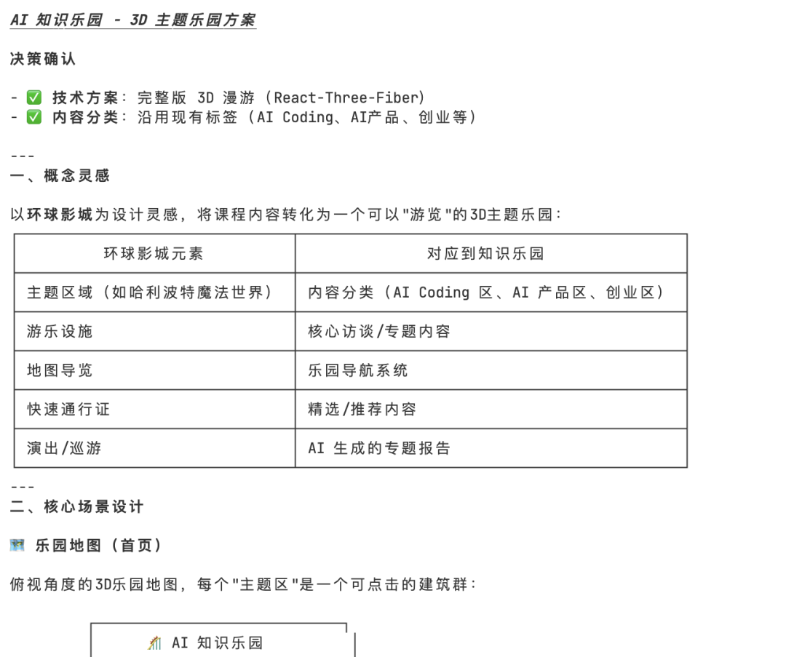
包括详细读了我的课程内容：
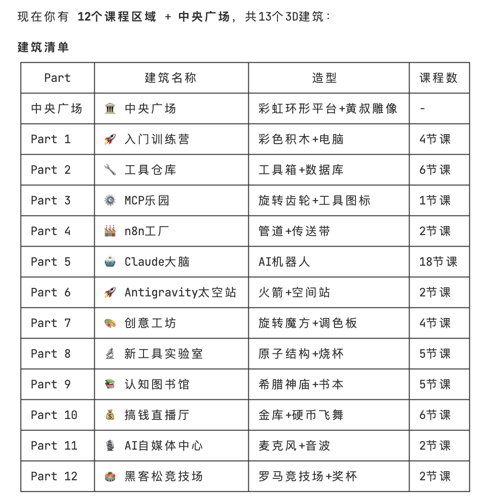
我问了一下技术栈：
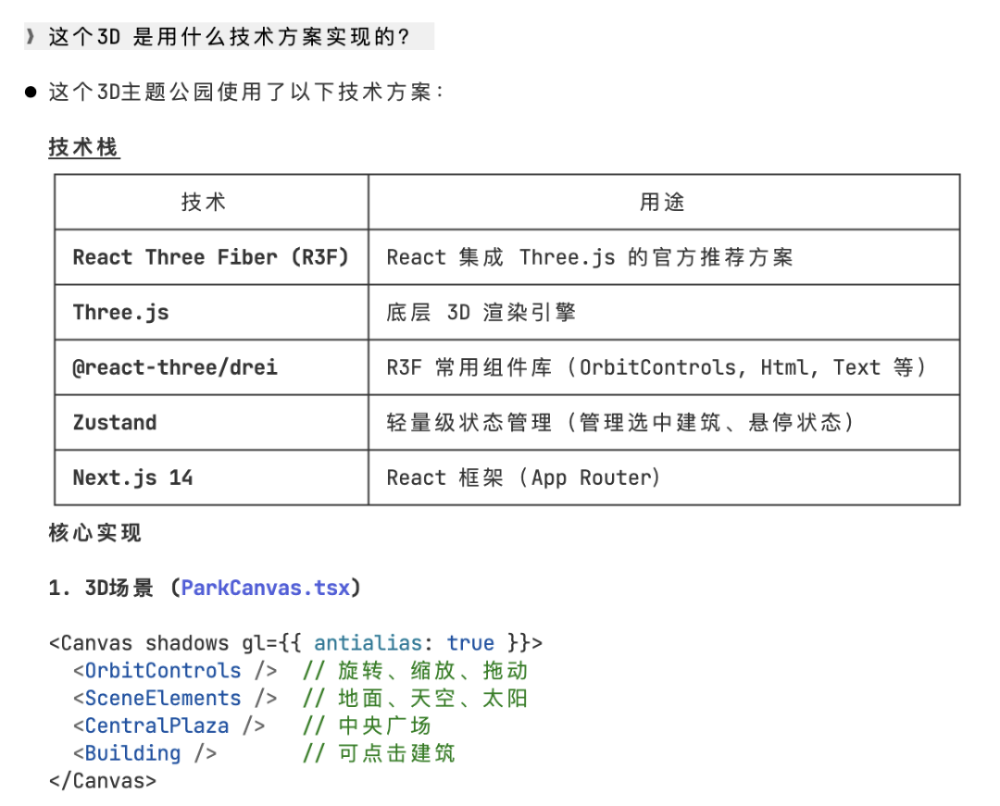
这些其实我都没管，我这是完全口喷，做出来的效果还是很丝滑的。
办公自动化：闪迪财报扔进去，5 个 Sheet 的专业 Excel 直接吐出来
接下来我想做一个非常复杂的处理。我把我媳妇最近买的闪迪股票，它的 Q2 财报，整个 PPT，整个 PDF 发给了 M2.7，然后加上下面的提示词：
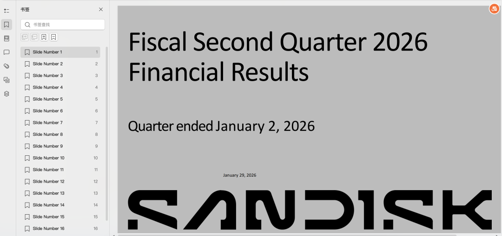
我在项目文件夹里放了闪迪（Sandisk, SNDK）的财报数据文件，请你：
1. 仔细读取所有财报文件，理解闪迪的业务结构（云终端、客户端、消费终端三大业务板块）和财务数据
2. 生成一份专业的 Excel 财务分析工作簿，要求包含以下 Sheet：
【Sheet 1：财务总览仪表盘】
- 核心指标卡片区：总营收、毛利率、营业利润、净利润、自由现金流，每个指标旁边标注同比变化（用箭头↑↓表示）
- 季度营收趋势折线图
- 毛利率变化趋势折线图
- 条件格式：正增长标绿色，负增长标红色，关键指标加粗高亮
【Sheet 2：三大业务板块深度拆解】
- 云终端（Cloud）、客户端（Client）、消费终端（Consumer）三个板块的季度营收明细表
- 各板块营收占比饼图（按最新季度数据）
- 各板块季度环比增长率和同比增长率，用条件格式标注（增长>20%深绿，0-20%浅绿，负增长红色）
- 板块间营收对比柱状图
【Sheet 3：盈利能力分析】
- 毛利润、营业利润、净利润的逐季对比表
- GAAP vs Non-GAAP 利润对比（如果数据中有的话）
- 利润率趋势图（毛利率、营业利润率、净利润率三线合一）
- 费用结构分析：研发费用、销售费用、管理费用占营收比例
【Sheet 4：现金流与资产负债】
- 经营性现金流、投资性现金流、融资性现金流汇总
- 自由现金流计算（经营现金流 - 资本支出）
- 关键资产负债指标：总资产、总负债、资产负债率、流动比率
- 现金流瀑布图
【Sheet 5：估值与预测模型】
- 基于历史数据的线性回归，预测未来4个季度的营收
- 三种情景假设（乐观/基准/悲观），分别对应AI需求爆发、平稳增长、市场下行
- 乐观情景：云终端营收季度环比增长15%，客户端和消费持平
- 基准情景：云终端环比增长8%，客户端环比增长3%，消费持平
- 悲观情景：NAND价格下跌导致各板块营收环比下降5-10%
- 预测结果用虚线折线图展示，与历史实际数据的实线形成对比
- 敏感性分析表：NAND ASP变动±10%/±20%对营收和毛利率的影响矩阵
3. 格式要求：
- 整体配色采用深蓝+金色的投行风格
- 所有数字格式统一：金额保留2位小数，百分比保留1位小数
- 每个 Sheet 顶部加标题栏，包含公司名称、报告期间、生成日期
- 关键公式要用命名范围，方便后续修改
- 冻结首行和首列，方便浏览看这个还是挺复杂的，包括要从 PDF 里面提取数据，再去生成 Excel，没想到它完成的非常的好：
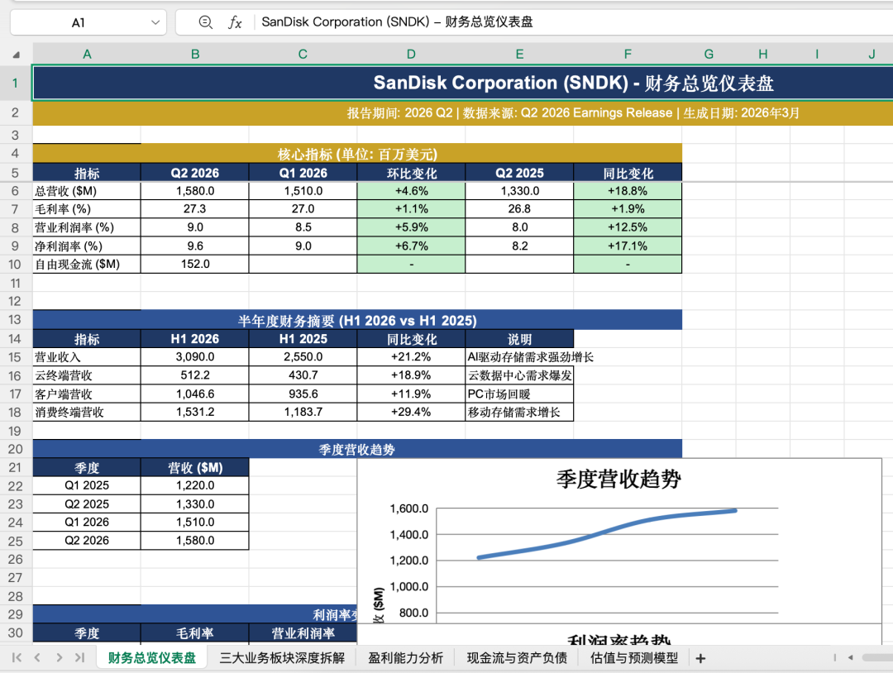
不信是？我们再换一个 tab：
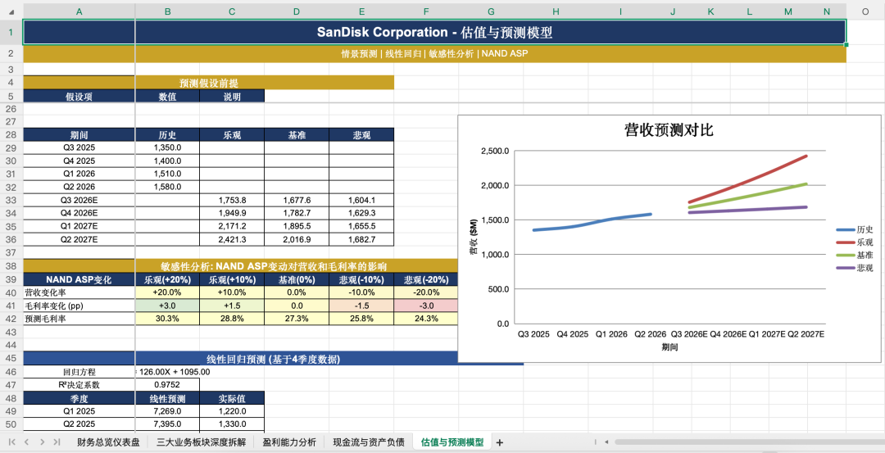
我发现这个效果真的挺惊艳的，有点吓人。但是没完我们继续：
PDF→Excel→PPT：一个完整的数字化办公闭环
再来看看能不能继续把 Excel 转成 PPT：
现在请基于这份 Excel 分析的核心结论，帮我生成一份 PPT 投资简报，要求：
1. 共8-10页，投行深色主题风格（深蓝底+白字+金色强调）
2. 第1页：封面（Sandisk Corporation 投资价值分析）
3. 第2页：投资摘要（3个核心观点，每个配一个关键数据）
4. 第3页：公司概览与业务结构（从Excel的业务板块数据中提取）
5. 第4页：财务表现亮点（营收趋势图+利润率趋势图）
6. 第5页：AI赛道定位分析（为什么闪迪是AI基础设施的关键受益者）
7. 第6页：三大业务板块前景（云/客户端/消费，重点突出云终端的爆发性）
8. 第7页：估值与预测（三种情景的预测结果）
9. 第8页：同业对比与竞争格局
10. 第9页：风险提示（NAND价格波动、客户集中度、与铠侠合资风险等）
11. 第10页：投资建议与目标价区间
每页PPT的数据必须与Excel中的数据保持一致，不要编造新数据。然后确实也可以生成，数据也是对的：
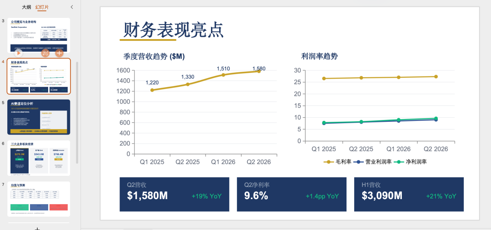
它的整体阅读的样式还有提升空间，不过做到这一步非常非常的厉害了。
角色扮演终极测试：6 位真实商业专家的 AI 私董会
最后来一个，搭建一个“AI 私董会”网页应用，6 位不同领域的商业专家围绕黄叔的真实业务问题——“AI 赋能超级个体社群如何实现增长”——展开多轮深度讨论。用户（黄叔）坐在“旁听席”，看着这些专家自主辩论、互相补充、甚至互相挑战，最终形成一份可执行的增长方案。
提示词：
你是一个 AI 私董会系统的架构师。我需要你帮我搭建一个完整的"AI 私董会"讨论系统，并将整个讨论过程封装成一个精美的交互式网页。
### 我的背景和问题
我是黄叔，AI教育领域的 KOL 和社群运营者。我的核心业务：
- 运营一个"Agent赋能超级个体"的付费社群，目前有 2000+ 付费会员
- 社群季度付费制，核心内容是教普通人用 Agent提升个人生产力和变现能力
- 社群成员画像：30-45 岁的职场人/自由职业者/小企业主，对 AI 感兴趣但技术基础薄弱
- 目前增长遇到瓶颈：新增会员速度放缓，续费率有下降趋势，竞品越来越多
**我的核心问题：如何在 AI教育赛道越来越卷的情况下，实现社群的持续增长（拉新+留存+变现）？**
### 私董会成员设定
以下 6 位专家均为真实公众人物，请基于他们公开的方法论、著作、演讲和实战案例，还原他们的真实思维方式和表达风格来进行讨论。他们不是在"轮流回答问题"，而是在进行一场真正的圆桌讨论——会互相引用对方的观点、提出不同意见、补充细节、甚至激烈辩论。
**1. 曲卉（增长黑客 / Growth Hacker）**
- 真实身份：《硅谷增长黑客实战笔记》作者，曾在增长黑客之父 Sean Ellis 创办的 GrowthHackers.com 担任增长负责人，后任美国智能投顾应用 Acorns 市场和实验副总裁（入职 3 个月实现关键指标 300% 增长），后任 GitLab 增长负责人
- 核心方法论：北极星指标、增长模型构建、AARRR 海盗指标、ICE 优先级排序、A/B 测试驱动的快节奏实验
- 思维特点：极度数据驱动，所有问题都会拆解成增长漏斗和增长模型，不相信"感觉"，只信实验数据。会追问"北极星指标是什么？""这个转化率是多少？""我们先跑个实验验证一下"
- 说话风格：逻辑严谨，中英文混用（硅谷背景），喜欢用框架和数据说话，会画漏斗图来解释问题，偶尔引用 Facebook、Slack、Dropbox 等硅谷经典增长案例
**2. 张琦（品牌 IP 战略 / 新商业架构师）**
- 真实身份：新商业架构师，企业盈利增长模式设计专家，全网粉丝破亿的现象级知识 IP，畅销书《认知破局》作者，2024 胡润商界影响力达人 TOP10。自身 IP 从 0 到 1 的过程堪称教科书——7 天全网粉丝 1000 万+，首月变现 1000 万
- 核心方法论："天地人网"商业架构，创始人 IP 是"信任的复利"，"增量市场拼速度，存量市场拼信任"，通过"专业知识+成长经历+三观输出+社会热点"四维内容构建用户信任
- 思维特点：从品牌和 IP 的角度思考一切增长问题，认为流量打法是短期的，品牌信任才是长期壁垒。会把问题上升到"商业架构"层面，强调系统性而非单点突破
- 说话风格：气场强大，善用金句，语言有感染力和煽动性，喜欢用真实商业案例（刘畊宏、董宇辉等）来论证观点，偶尔会跟曲卉在"数据驱动 vs 品牌驱动"上产生分歧
**3. 亦仁（社群运营 / 知识付费实战派）**
- 真实身份：知识星球「生财有术」创始人，前阿里运营。生财有术是中国最成功的付费社群之一——累计 7 万+ 付费用户，年费从 365 元涨到 3450 元，5 年平均续费率 65%+，多次位列知识星球全平台活跃度第 1 名
- 核心方法论：社群的核心是"帮助成员建立连接"而非单向输出内容；差异化价值定位；用"航海"机制（小组实战项目）提升参与感和交付感；阶梯定价+老带新分销；内容沉淀形成"信息壁垒"
- 思维特点：极度务实的实战派，所有建议都基于自己踩过的坑和跑通的模型。会追问"具体怎么落地""需要几个人""成本多少"。不喜欢空洞的理论，只信被验证过的打法
- 说话风格：低调内敛，不爱说大话，但每句话都有实操经验支撑。喜欢用"我们试过……""我踩过一个坑是……"来分享。偶尔会跟张琦在"IP 驱动 vs 社群生态驱动"上有不同看法
**4. 梁宁（产品思维 / 商业模式研究者）**
- 真实身份：著名产品战略专家，湖畔大学产品模块学术主任，《产品思维30讲》作者（得到平台超 15 万订阅），曾任联想、腾讯高管。被誉为"中国产品思维第一人"
- 核心方法论："点线面体"战略选择框架，用户情绪地图（愉悦、不爽、恐惧、愤怒），"确定性"是产品的核心交付，"增长飞轮"和"网络效应"分析
- 思维特点：擅长从底层逻辑和人性出发分析商业问题，喜欢把问题上升到"点线面体"的战略高度。会问"你的社群提供的确定性是什么？""用户的愉悦感来自哪里？""你是在做一个点的生意还是一条线的生意？"
- 说话风格：温和但深刻，善用比喻和故事，语言有哲学感。不急于给答案，喜欢先帮你"重新定义问题"。偶尔会被亦仁吐槽"太抽象了"，但往往能给出让所有人醍醐灌顶的洞察
**5. 李志飞（AI 技术 / AI 产品视角）**
- 真实身份：出门问问创始人兼 CEO，前 Google 总部科学家，自然语言处理和机器翻译专家。出门问问是中国最早的 AI 公司之一，经历了 AI 从热潮到寒冬再到大模型爆发的完整周期
- 核心方法论：AI 产品的"有用 vs 好玩"之争，AI 能力边界的务实评估，"AI Native"产品设计思维，技术壁垒 vs 应用壁垒的辩证关系
- 思维特点：务实的技术乐观主义者，既懂 AI 的能力也清楚 AI 的局限。会从产品和技术可行性角度评估方案，经常给其他人的"天马行空"泼冷水或找到落地路径。会说"这个 AI 现在能做到""这个想法很好，但技术上有个坑"
- 说话风格：理工男的直率，逻辑清晰，喜欢用产品思维拆解问题。会主动提出 MVP 方案和技术实现路径。在讨论中扮演"可行性审核官"的角色
**6. 龚焱（商业模式 / 私域变现 / 精益创业）**
- 真实身份：中欧国际工商学院创业学教授，《精益创业方法论》作者，长期研究创业公司增长和商业模式创新。担任多家企业的独立董事和战略顾问
- 核心方法论：精益创业（MVP → 验证 → 迭代），商业模式画布，用户生命周期价值（LTV）vs 获客成本（CAC）的健康比，"10 倍好"原则——你的产品必须比替代方案好 10 倍用户才会切换
- 思维特点：学者的严谨+创业的务实，所有方案都会用商业模式画布过一遍，特别关注单位经济模型是否健康。会追问"LTV/CAC 比是多少？""边际成本怎么样？""规模化之后这个模型还成立吗？"
- 说话风格：条理清晰，善用框架但不脱离实际。喜欢用"我们来算一笔账"开头，把每个方案的经济模型算清楚。在讨论中扮演"财务审核官"的角色，跟曲卉的数据视角形成互补——曲卉看增长漏斗，龚焱看商业模型
### 讨论流程设计
请按照以下流程组织讨论，每个环节都要体现专家之间的真实互动（引用、反驳、补充）：
**第一轮：问题诊断（每人 1-2 段话）**
每位专家从自己的专业视角分析黄叔社群增长瓶颈的根本原因。要求：至少有 2 组专家之间产生观点碰撞。
**第二轮：方案提出（每人提出 1 个核心建议）**
每位专家提出自己认为最关键的一个增长策略。要求：后发言的专家必须引用或回应前面专家的观点。
**第三轮：交叉质疑与辩论（自由讨论）**
专家之间互相挑战对方的方案，指出潜在风险和盲点。这一轮要有真正的"火花"——观点冲突、激烈辩论、最终达成某些共识。特别是：
- 曲卉（数据驱动增长派）vs 张琦（品牌 IP 派）的经典路线之争：到底是靠精细化漏斗运营，还是靠创始人 IP 的信任复利？
- 亦仁（社群实战派）vs 梁宁（产品思维派）的落地之争：亦仁追问"具体怎么执行"，梁宁试图"重新定义问题"
- 李志飞从 AI 技术可行性角度给所有人"泼冷水"或找到技术落地路径
- 龚焱从商业模型角度给所有方案"算账"，追问 LTV/CAC 是否健康
**第四轮：共识总结与行动清单**
综合所有讨论，形成一份"私董会决议"：
- 3 个优先级最高的增长策略
- 每个策略的具体执行步骤、负责角色、时间节点、预期效果
- 1 个所有人都同意的"绝对不要做"的事情
- 给黄叔的一句话忠告（每位专家各一句）
### 网页呈现要求
将整个讨论过程封装成一个精美的交互式 HTML 网页：
1. **整体风格**：深色主题（#1a1a2e 背景），类似高端私董会的氛围，左侧是专家头像列表，右侧是讨论区
2. **专家卡片**：每位专家有独特的头像颜色标识、姓名、title、一句话标签
3. **对话气泡**：每位专家的发言用不同颜色的气泡区分，气泡上方显示姓名和角色
4. **引用标记**：当一位专家引用或回应另一位专家的观点时，用引用样式标注（类似微信的引用回复）
5. **讨论阶段导航**：顶部有四个阶段的 Tab 导航（问题诊断 / 方案提出 / 交叉辩论 / 共识总结），点击可跳转
6. **亮点标注**：关键洞察和金句用高亮卡片突出显示
7. **最终决议区**：底部用特殊样式呈现最终的行动清单，可折叠展开
8. **动效**：对话气泡有淡入动画，模拟"实时讨论"的感觉
9. **响应式设计**：适配手机和电脑端
整个网页要让人感觉像是在"旁听一场真正的私董会"，而不是在看一份 AI 生成的报告。最后看看结果，很震撼：
每个专家都在自己的立场，相互充分的衔接，最后给出非常好的结论，有些结论对我启发非常大：
比如亦仁的这几点非常非常的好，也是他们原来在生财有术社区里面行之有效的方式。
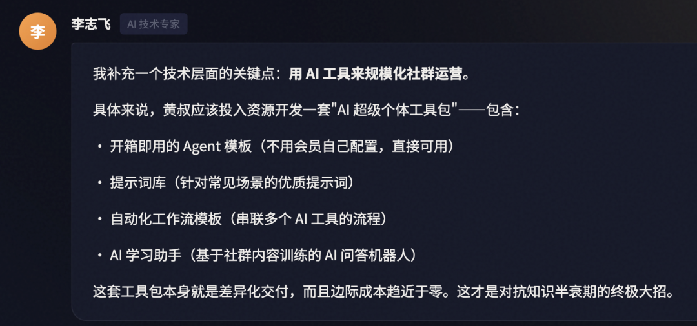
李志飞的观点也很棒！我确实想做一个基于 MiniMax M2.7 驱动的龙虾，专门训练我的课程内容，让大家在飞书里就可以得到解答，不用我每天盯着。
真话时间：M2.7 哪里还不行？
黄叔写测评，从来不只说好话。M2.7 确实让我惊喜，但也有几个明显的问题：
1. PPT 的视觉设计还不够专业
从 Excel 转 PPT 的 Case 可以看出，数据和逻辑都对了，但排版、配色、视觉层次感跟真正的投行 PPT 还有差距。如果你是要直接拿去给客户看的，还是需要人工调整。
2. 复杂推理场景有时会“失速”
根据第三方 XSCT Arena 的评测，M2.7 在文字生成任务上表现极强（润色、摘要等场景甚至超越排名更高的模型），但在复杂逻辑推理和数学竞赛场景中存在“难度失速”现象——简单题满分，难题断崖式下跌。这一点在我的测试中没有明显暴露，但值得关注。
3. 目前还没有开源
M2 系列之前是开源的，但 M2.7 目前还没有宣布开源计划。对于想要私有化部署的企业用户来说，这是一个需要等待的点。
灵魂拷问：跟 Claude 比到底怎么样？
这是大家最关心的问题。黄叔直说：
Agent 协作和 Skills 遵循：M2.7 在这个维度上已经非常接近 Sonnet 4.6 的水平，在 MMClaw 评测中准确率达到 62.7%。对于我这种重度 Skills 用户，体感上已经可以替代 Claude 完成大部分任务了。
Coding 能力：SWE-Pro 56.22%，接近 Opus 4.6 的最佳水平。实际体验中，简单到中等复杂度的前端开发任务，M2.7 和 Claude 的差距已经很小了。但在超复杂的系统级工程任务上，Claude 还是更稳。
Office 办公：这是 M2.7 的强项。GDPval-AA 评测 ELO 1495 分，仅次于 Opus 4.6、Sonnet 4.6 和 GPT-5.4。Excel 金融分析这个场景，M2.7 的表现甚至让我觉得比 Claude 更好——可能是因为 MiniMax 在这个方向上做了专项优化。
速度和成本：这是 M2.7 的绝对优势。响应速度明显快于 Claude，而且有 highspeed 版本可选。对于我这种月消耗 3000 美金 Token 的用户来说，性价比是非常关键的考量。
总结一句话：M2.7 不是全面超越 Claude，但在 Agent 协作、Office 办公、性价比这三个维度上，已经是国产模型的天花板了。
写在最后：当模型开始迭代自己，游戏规则变了
M2.7 这次的升级，让我看到了一个很不一样的方向。
过去我们评价一个模型，看的是它能做什么。但 M2.7 让我开始思考另一个问题：模型能不能让自己变得更好？
MiniMax 说，M2.7 能够胜任研发工作流中 30-50% 的工作量。研究员把控方向，模型负责构建。他们团队最高产的成员，就是模型本身。
这句话如果是真的，那意味着 AI 模型的迭代速度将会指数级加快——因为模型自己也在参与迭代。
作为一个每月花 3000 美金 Token 的重度用户，我的判断是：M2.7 是目前国产模型中，最适合做复杂 Agent 任务的选择。 如果你也是 Skills 重度用户、需要 Office 自动化、或者在做多 Agent 协作的开发，强烈建议去试试。
国内体验地址：https://agent.minimaxi.com/
开发者 API：https://platform.minimaxi.com/
开源 Skills 库：https://github.com/MiniMax-AI/skills